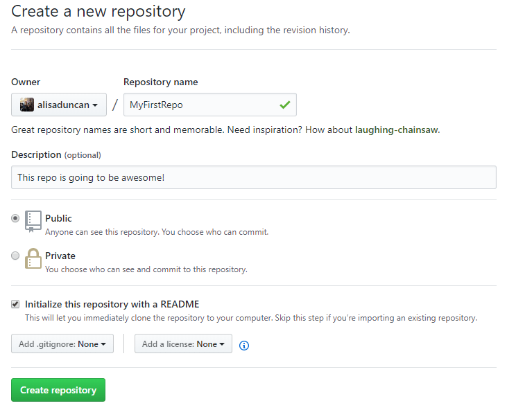

Creating a repository and commit changes
We'll create our own repository and commit changes to source files. At the end we'll build something similar to the "DrinkOrderApp" with commits and branches.
This section will help guide you through the following steps:
Create a repository in GitHub and clone
We'll create our first repository on GitHub and clone it so that we're prepared to start making changes.
In Chrome, navigate to GitHub and create a new repository by clicking the button in the upper right corner. Select New repository.

Name your repository "MyFirstRepo". Add a short description and check the Initialize this repository with a README checkbox. Click Create repository.

You can ignore the Add .gitignore and Add a license dropdowns for the time being. You won't need them for what we are doing this evening.
You now have a repository! Notice you're automatically on 'master' branch. Click the green Clone or download button and copy the link by clicking on the button.
In your terminal, navigate to the "CodingAndCocktails/session3" folder. Type
git cloneand paste the link to your repository that you copied in the previous step. PressEnter. Your terminal will look like this**[terminal] **[prompt LadyDev@Coding&Cocktails]**[path ~/CodingAndCocktails/session3] **[delimiter λ ]**[command git clone https://github.com/kcwit/MyFirstRepo.git] Cloning into 'MyFirstRepo'... remote: Enumerating objects: 3, done. remote: Counting objects: 100% (3/3), done. remote: Total 3 (delta 0), reused 0 (delta 0), pack-reused 0 Unpacking objects: 100% (3/3), done.List out the folders in "session3" directory. You should see a new folder named "MyFirstRepo". Navigate into "MyFirstRepo" and notice your terminal now contains the name of the branch 'master'.
Don't forget to use Tab completion to make typing in the terminal easier!
If you are borrowing a laptop, you need to set your username and email for git. In your terminal, double check that you are in the "MyFirstRepo" directory and type the following 2 commands (notice the quotes for name). Press
Enterbetween each command.git config user.name "Your Name" git config user.email your@email.comFeel free to grab a mentor for help!
List all the files, including the hidden ones, to see the files Git creates for you. You should see the following files
**[terminal] **[prompt LadyDev@Coding&Cocktails]**[path ~/CodingAndCocktails/session3/MyFirstRepo (master)] **[delimiter λ ]**[command ls -al] ./ ../ .git/ README.mdGit has special files. One of them is the ".git" folder. It contains all the information on reconstructing the version history for your repository. The ".git" folder is a profile file we discussed earlier in the command line section.
If you don't see the ".git" folder in the file explorer, you will need to enable viewing hidden files.
Type
git status. You will see something like this**[terminal] **[prompt LadyDev@Coding&Cocktails]**[path ~/CodingAndCocktails/session3/MyFirstRepo (master)] **[delimiter λ ]**[command git status] On branch master Your branch is up to date with 'origin/master'. nothing to commit, working tree cleanWe haven't done anything to the repository so our working tree is clean. We can always run
git statusto double check our work.Let's open the repository in GitKraken. In GitKraken, select File Open Repo. In the Repository Management dialog select Open a Repository and select your "MyFirstRepo" folder in your "CodingAndCocktails/session3" directory.
When you create a repository with a README file, GitHub automatically commits the file for you. You have 1 commit in your repository! Feel free to inspect your commit, the file, and your branch.
Before starting any work in a git repository, it's good practice to make sure you have the latest changes. In the terminal, type
git pull. Your terminal should state it's up to date.
Create a branch for our work
Development work usually isn't done in 'master'. Instead, feature branches are used. We'll create a branch for our work tonight.
Let's create a branch for us to work in called 'cocktails-branch'. In the terminal, type
git checkout -b cocktails-branch. It should look like this**[terminal] **[prompt LadyDev@Coding&Cocktails]**[path ~/CodingAndCocktails/session3/MyFirstRepo (master)] **[delimiter λ ]**[command git checkout -b cocktails-branch] Switched to a new branch 'cocktails-branch'We passed in the '-b' flag into
git checkoutcommand. This means we'll create and checkout a branch at the same time.Your terminal might look a little different after creating a branch. The terminals we have you use include the branch name, so you should see 'cocktails-branch' included in your prompt.
Type
git status. It should look something like this**[terminal] **[prompt LadyDev@Coding&Cocktails]**[path ~/CodingAndCocktails/session3/MyFirstRepo (cocktails-branch)] **[delimiter λ ]**[command git status] On branch cocktails-branch nothing to commit, working tree clean
Add a new file and check status
Now that we've cloned, we can start making changes. Let's practice by adding and staging files by using the helpful information from the git status command.
Let's create a new file by using the command line. Type
touch cocktails.txt.**[terminal] **[prompt LadyDev@Coding&Cocktails]**[path ~/CodingAndCocktails/session3/MyFirstRepo (cocktails-branch)] **[delimiter λ ]**[command touch cocktails.txt]Your terminal may have changed when you created a new file. Mac users may see a yellow X appear and Cmder users may see the color of '(cocktails-branch)' branch name change. This is a way your terminal helps you keep track of changes in your git repository.
Let's check out the git status again. This time the terminal lists cocktails.txt as an untracked file.
**[terminal] **[prompt LadyDev@Coding&Cocktails]**[path ~/CodingAndCocktails/session3/MyFirstRepo (cocktails-branch)] **[delimiter λ ]**[command git status] On branch cocktails-branch Your branch is up to date with 'origin/cocktails-branch'. Untracked files: (use "git add <file>..." to include in what will be committed) **[error cocktails.txt] nothing added to commit but untracked files present (use "git add" to track)An untracked file is a file that Git doesn't know about. You have to explicitly ask Git to track a file. Git doesn't do this automatically in case you accidentally include files that shouldn't be in source control (such as large files or application files).
We can add the file to Git and stage the file at the same time by typing
git add cocktails.txt.Let's check out the status again. This time the terminal lists cocktails.txt as a change to be committed.
**[terminal] **[prompt LadyDev@Coding&Cocktails]**[path ~/CodingAndCocktails/session3/MyFirstRepo (cocktails-branch)] **[delimiter λ ]**[command git status] On branch cocktails-branch Your branch is up to date with 'origin/cocktails-branch'. Changes to be committed: (use "git reset HEAD <file>..." to unstage) **[warning new file: cocktails.txt]In GitKraken, click on the View change button or click on "//WIP" in the git tree view to see the staged files.
Oops! We meant to add some text to the file. It should say "My favorite cocktail is" in cocktails.txt. We need to fix that. Open cocktails.txt in any editor you want to add the text. Make the change and save the file.
Check the git status in the terminal and take a look at GitKraken. Your terminal shows cocktails.txt as unstaged and ready to be committed. What?!
**[terminal] **[prompt LadyDev@Coding&Cocktails]**[path ~/CodingAndCocktails/session3/MyFirstRepo (cocktails-branch)] **[delimiter λ ]**[command git status] On branch cocktails-branch Your branch is up to date with 'origin/cocktails-branch'. Changes to be committed: (use "git reset HEAD <file>..." to unstage) **[warning new file: cocktails.txt] Changes not staged for commit: (use "git add <file>..." to update what will be committed) (use "git checkout -- <file>..." to discard changes in working directory) **[error modified: cocktails.txt]This is because when you ran
git add, Git staged the file in the state at that time. With a new change, we have to stage the file again.In GitKraken, click on the cocktails.txt in the Staged Files list at the bottom right of the application. Notice there's nothing to display in the diff view. Now click on cocktails.txt in the Unstaged Files list at the top right of the application. We now see our text change.
Stage cocktails.txt.
Need a little help? Expand this section for guidance.
Typegit add cocktails.txt.
Commit your changes
Our file is ready to go! Let's commit our changes.
Now we can commit our new file to git. Type
git commit -m "important file". You should see something like this in your terminal**[terminal] **[prompt LadyDev@Coding&Cocktails]**[path ~/CodingAndCocktails/session3/MyFirstRepo (cocktails-branch)] **[delimiter λ ]**[command git commit -m "important file"] [cocktails-branch dc2c473] important file 1 file changed, 1 insertion(+) create mode 100644 cocktails.txtWe committed a snapshot of the files to the repository history. We see each of these commits in the git graph. The '-m' flag allows you to provide a description of the changes and is short for "message". This is important information for those who may collaborate on the code later.
If you accidentally hit
Enterafter you typedgit commit, have no fear.Your default text editor (default is vi) will open, where you can add your commit message. It's a console based text editor that uses keyboard input to navigate. Follow the instructions below to add your commit message. Feel free to grab a mentor for help!
- Press
ito enter INSERT mode. - Type your commit message.
- Press
Escto exit out of INSERT mode. - Next, type in
:wqto write the message and quit the operation.
- Press
Your terminal changed back to how it looked before we added the cocktails.txt file. Take a look at your git status and in GitKraken.
**[terminal] **[prompt LadyDev@Coding&Cocktails]**[path ~/CodingAndCocktails/session3/MyFirstRepo (cocktails-branch)] **[delimiter λ ]**[command git status] On branch cocktails-branch nothing to commit, working tree cleanWe're building our own Git graph. You see 2 commits in GitKraken. We can view this in the terminal by typing
git log. You'll see 2 commits in the terminal that matches up to what you see in GitKraken. A visualization of our initial commit and a new commit on a branch looks like this
References and helpful links
Git SCM documentation for clone